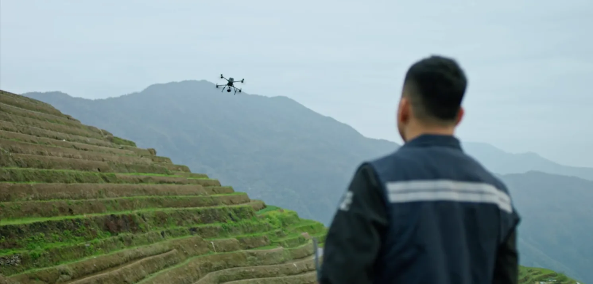
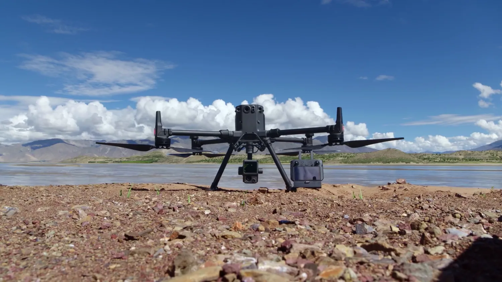
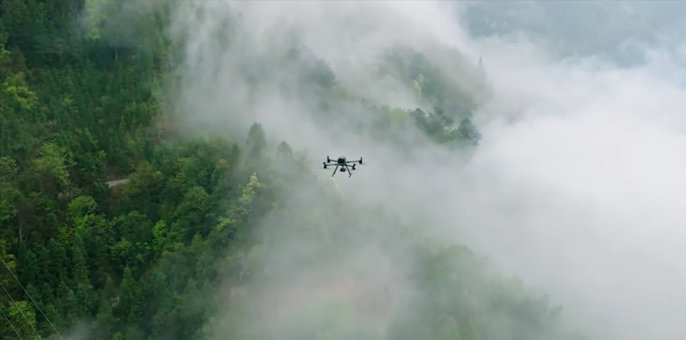
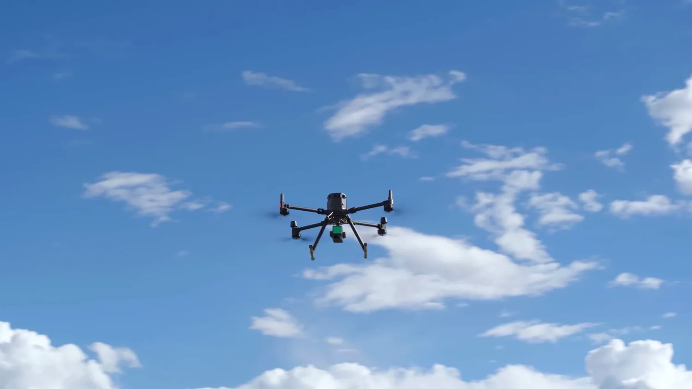

GPS & RTK Surveying in Costa Rica
Professional geospatial surveying with centimeter-level accuracy. Perfect for boundary surveys, construction staking, and Plano Catastro compliance.

What is GPS & RTK Surveying?
GPS and Real-Time Kinematic (RTK) surveying represents the highest precision positioning technology available for drone-based geospatial work. While standard GPS provides accuracy within several meters, RTK technology leverages real-time corrections to achieve ±2cm horizontal and ±3cm vertical accuracy—transforming drone surveys into professional surveying tools suitable for legal boundary documentation and construction staking.
Our RTK-equipped drones utilize the DJI D-RTK 2 base station system, which establishes a local reference frame and broadcasts real-time differential corrections to the airborne platform. Every waypoint the drone passes through is recorded with centimeter-level precision, creating survey-grade geospatial data directly compatible with Costa Rican cadastral standards.
The RTK Advantage Over Standard GPS
- Real-Time Corrections: Base station broadcasts differential corrections, eliminating post-processing delays
- Centimeter Accuracy: ±2cm horizontal, ±3cm vertical—suitable for legal surveys and staking
- Faster Data Collection: No need for hours of post-processing with differential corrections
- Direct Integration: RTK points are immediately usable in CAD, GIS, and surveying software
- Weather Flexibility: Functions effectively in many weather conditions without requiring sky exposure during processing
- Legal Recognition: Meets Costa Rican standards for boundary documentation
Professional RTK Equipment
Enterprise-grade DJI D-RTK 2 technology for consistent, survey-grade results across all of Costa Rica.
| Component | Specification |
|---|---|
| Base Station | DJI D-RTK 2 — real-time differential GNSS corrections via radio link |
| Horizontal Accuracy | ±2 cm |
| Vertical Accuracy | ±3 cm |
| GNSS Constellations | GPS, GLONASS, Galileo, BeiDou (simultaneous) |
| Update Rate | 5 Hz real-time positioning |
| Effective Range | Up to 10 km in optimal conditions |
| Output Formats | Shapefiles, DXF, LAS, CSV |
| Coordinate System | CRTM05 (Costa Rican Transverse Mercator 2005) |

RTK Base Station Field Setup
Before each flight we establish the D-RTK 2 base station on stable ground with clear sky visibility—here beside a lakeside site framed by mountains. The base broadcasts live corrections to the aircraft, locking every waypoint to centimeter accuracy across the survey area.
RTK Surveying Applications in Costa Rica
From legal boundary surveys to construction staking — RTK precision supports every stage of property and infrastructure work.

Boundary & Property Surveys
Establish precise property boundaries for legal documentation and dispute resolution. RTK accuracy meets requirements for Plano Catastro registration and title verification.

Construction Staking
Mark building corners, utilities, and grade reference points with centimeter precision. Reduce surveyor visits and accelerate construction schedules.

Plano Catastro Compliance
Generate survey-grade boundary documentation meeting Costa Rican cadastral standards. Legal property registration requires precise geospatial data; RTK delivers this directly.

Infrastructure Mapping
Survey utility corridors, power lines, and water systems with precise positioning. Track infrastructure assets for maintenance planning and compliance.

Road & Grade Establishment
Mark alignment centerlines, grade elevations, and cross-sections for road construction. Precise vertical accuracy ensures correct grade establishment.

Easement & Right-of-Way
Identify and document easements, utility corridors, and property access rights. Survey-grade accuracy supports legal documentation and dispute prevention.
RTK Surveying Across Costa Rican Terrain
From foggy highland forest to open coastal sky, RTK positioning holds centimeter accuracy across the country's varied environments.

Highland & Forest Terrain
Mist and dense canopy never compromise positioning. Real-time corrections keep every recorded point survey-grade, even on challenging mountain and forest sites.

Clear-Sky Precision
Open skies give the aircraft full multi-constellation GNSS visibility—the ideal conditions for locking ±2cm horizontal and ±3cm vertical accuracy throughout the flight.
RTK Survey Deliverables
Every RTK survey includes comprehensive data packages ready for integration into your existing workflows.
- Point Shapefile: Survey points in Costa Rican coordinate system (CRTM05) with attribute data
- CAD Drawing (DXF): Ready for import into AutoCAD, Civil 3D, and other design software
- Survey Report: Comprehensive documentation including methodology, accuracy assessment, and metadata
- Georeferenced Orthomosaic: Visual reference showing survey point locations and property features
- CSV Data Export: Raw point coordinates and elevations in spreadsheet format
- Elevation Model: Digital surface model from RTK-positioned drone imagery
- Control Point Documentation: Full methodology and base station setup documentation
- Accuracy Report: Detailed positional accuracy analysis and quality metrics
- Data Package: All files organized and documented for archival and future reference
Costa Rican Plano Catastro Standards
Property registration in Costa Rica requires survey-grade documentation meeting Plano Catastro (cadastral plan) standards.
What is Plano Catastro?
Plano Catastro is the Costa Rican cadastral survey requirement—a precise property boundary survey that must be conducted by licensed surveyors or approved mapping providers. RTK drone surveying is recognized as an approved method when paired with proper control points and methodology documentation.
Our Plano Catastro Process
- Property Identification: Review existing property documents and identify survey area
- Base Station Setup: Establish RTK base station with reference to known control points or satellite positioning
- RTK Survey Flight: Drone surveys property boundaries with centimeter-level real-time accuracy
- Corner Marking: Property corners recorded with full position and elevation data
- Documentation Package: Complete survey report with methodology, accuracy assessment, and legal metadata
- Cadastral Registration: Deliver survey package suitable for Costa Rican property registration
Legal Recognition
RTK surveying is recognized by Costa Rican authorities as meeting cadastral survey standards when properly documented.
Rapid Documentation
Survey completion in days rather than weeks. Faster property registration and legal clarity.
Lower Cost
Significantly less expensive than traditional land surveying while maintaining legal validity.
Complete Record
Aerial orthomosaics provide visual documentation complementing traditional boundary surveys.
RTK Survey Pricing
Transparent, competitive pricing with no hidden fees.
Transparent, Competitive Pricing
Pricing Structure: Base service fee covers survey setup, flight planning, and data processing. Per-hectare rate applies to property area.
Example: 5-hectare property = $1,000 + (5 × $80) = $1,400 total
What's Included
- Full RTK survey with centimeter-level accuracy
- Property orthomosaic with survey points marked
- Point shapefile in CRTM05 coordinate system
- CAD drawing (DXF) for integration into design software
- Survey report with accuracy documentation
- Elevation data for topographic analysis
- Metadata and control point documentation
- 30-day revisions and clarifications
Turnaround Time
Standard Service: 72 hours from survey completion to deliverables
Express Service: 24 hours (additional 25% fee)
Why Choose DroneSurveyCR for RTK Surveying?
Professional equipment, licensed operators, and deep expertise in Costa Rican cadastral standards.
Professional Equipment
DJI D-RTK 2 system with multi-constellation GNSS. Enterprise-grade equipment ensuring consistent accuracy and reliability.
DGAC Licensed
Authorized by Costa Rica's aviation authority. All pilots hold commercial drone licenses and comprehensive insurance.
Plano Catastro Expertise
Extensive experience with Costa Rican cadastral standards. Surveys prepared for legal property registration.
Rapid Turnaround
72-hour standard service — 24-hour express available. Accelerate property registration and construction schedules.
Certified Accuracy
Every survey includes detailed accuracy assessment. Independent verification available for critical projects.
Experienced Team
Team with decade-plus combined experience in geospatial surveying. Qualified to handle complex projects and challenging sites.
Frequently Asked Questions
What is the difference between RTK and standard GPS positioning?
Standard GPS accuracy depends on atmospheric conditions and satellite geometry, typically achieving 2-5 meter accuracy. RTK uses real-time corrections from a base station to eliminate atmospheric errors, achieving ±2cm accuracy. For surveying applications, RTK is the only appropriate technology.
Is RTK surveying legally recognized for Plano Catastro in Costa Rica?
Yes. RTK drone surveying is recognized as an approved cadastral survey method when conducted with proper methodology, control point documentation, and accuracy verification. We prepare all surveys for legal property registration meeting Costa Rican standards.
What is the maximum range of RTK corrections?
Typical RTK effective range is 5-10km depending on terrain and radio signal propagation. For larger properties or remote areas, we deploy additional base stations to maintain centimeter accuracy across the entire survey area.
Can RTK surveying work in poor weather?
RTK positioning requires clear sky visibility for satellite signals. Heavy cloud cover and rain can degrade accuracy. We monitor weather conditions and schedule surveys during optimal windows. Most Costa Rican locations offer adequate clear-sky opportunities for surveying.
What coordinate system do you use for Costa Rican surveys?
We deliver all surveys in CRTM05 (Costa Rican Transverse Mercator 2005)—the official Costa Rican projection system. This coordinate system is required for Plano Catastro registration and all official property documentation.
How long does a typical RTK survey take?
Flight time depends on property size. A typical 5-hectare property requires 15-30 minutes of flight time. Total site time including base station setup and verification usually ranges 2-4 hours. Data processing and report generation add 24-72 hours depending on complexity.
Ready to get started with your GPS survey?
Request a free quote online or reach us directly on WhatsApp. We cover all regions of Costa Rica.